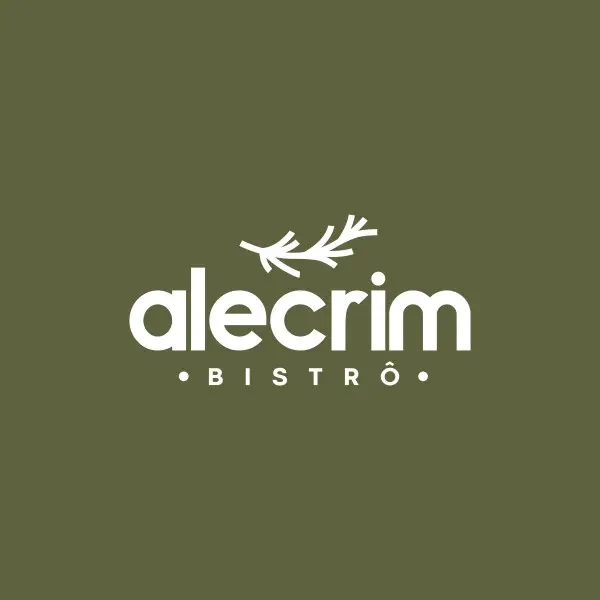
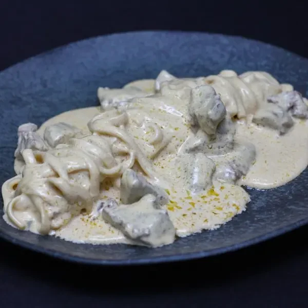
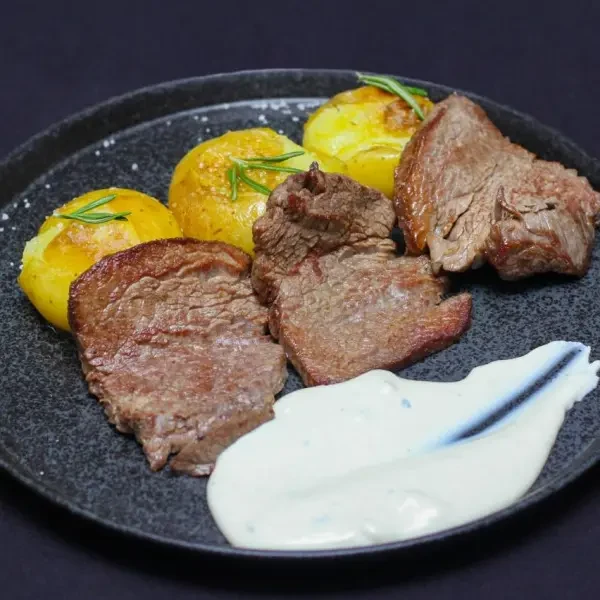
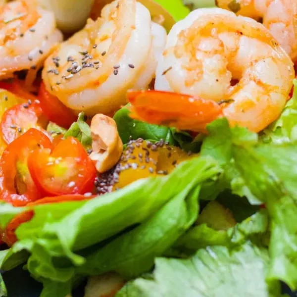
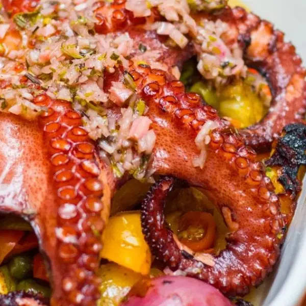
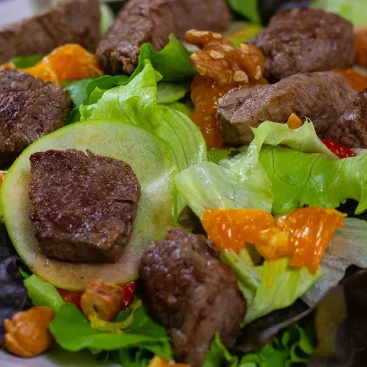
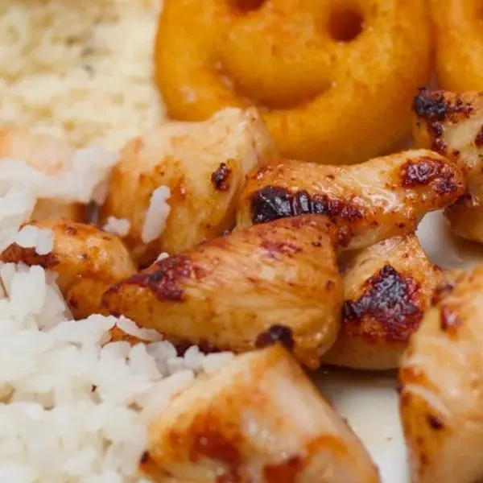

Talharim artesanal de filé
Massa fresca, filé mignon em cubos e molho de queijo ou pomodoro.

Centro de Sobral
Ligar para o AlecrimRecebemos você no Centro de Sobral com uma cozinha que passa pelas massas, pelos cortes de carne e pelos sabores do mar.
Conhecer o menu e fazer um pedido
Talharim fresco, risotos e pratos com acompanhamentos fazem parte do nosso cardápio. Você pode começar escolhendo o ingrediente que quer à mesa: filé, salmão, camarão ou legumes.
Nosso menu também reúne saladas e pratos infantis. Os ingredientes de cada opção estão descritos no cardápio.
Receitas que levam o molho e o acompanhamento para o centro do prato.
Massa fresca, filé mignon em cubos e molho de queijo ou pomodoro.
Massa artesanal com bacon, molho de gemas e queijo grana.
Arroz arbóreo, filé mignon, funghi, molho de queijo e grana.
Legumes e queijo grana compõem a opção sem carne do nosso repertório de risotos.

Escalopes de filé mignon grelhados, batatas ao murro com sal grosso e alecrim, finalizados com molho de queijo.
Uma opção para quem prefere um corte de carne acompanhado de risoto de bacon e molho de manteiga.
Salmão grelhado com risoto de limão siciliano e molho de frutas vermelhas.
Camarão em molho de moqueca, banana-da-terra, farofa cítrica e arroz de coco.
Nosso menu completo reúne as opções de pescados e frutos do mar disponíveis para pedido.
Ver pratos no cardápio



Temos opções infantis de frango e mignon com arroz, batatas e farofa. Para uma escolha mais leve na refeição, conheça também nossas saladas.
Ingredientes e acompanhamentos podem variar conforme o prato escolhido no menu.
Sim. No nosso cardápio temos risoto vegetariano com legumes e grana. Confira os ingredientes ao escolher.
O menu aiqfome informa os canais de entrega e retirada disponíveis, as taxas e os horários de pedido.
Ligue para o Alecrim pelo (88) 99687-0549. O horário exibido na plataforma de pedidos se refere ao serviço disponível por ela.
Informe à equipe antes do pedido para verificar ingredientes e condições de preparo. Não escolha apenas pela fotografia.